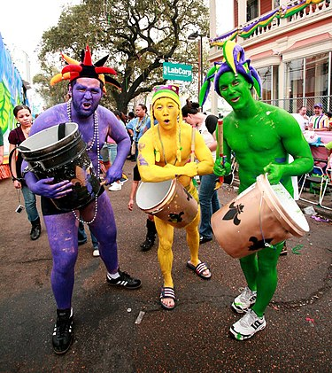

The Merdi Grars Festival
Mardi Gras refers to events of the Carnival celebration, beginning on or after the Christian feasts of the Epiphany (Three Kings Day) and culminating on the day before Ash Wednesday, which is known as Shrove Tuesday. Mardi Gras is French for "Fat Tuesday", reflecting the practice of the last night of eating rich, fatty foods before the ritual Lenten sacrifices and fasting of the Lenten season.
Related popular practices are associated with Shrovetide celebrations before the fasting and religious obligations associated with the penitential season of Lent. In countries such as the United Kingdom, Mardi Gras is more usually known as Pancake Daay or (traditionally) Shrove Tuesday (derived from the word shrive, meaning "to administer the sacrament of confession to; to absolve").
Traditions

Mardi Gras is about music, parades, picnics, floats and excitement. It's one big holiday in New Orleans! Revelers know to wear costumes or at least dress in purple, green, and gold, and adorn themselves with long beads caught from the floats of previous parades. You'll see a lot of crazy costumes, kids with their families are everywhere, and both locals and visitors having a great time. Parade goers will sit on the ground, throw balls, play music, eat great food and watch the crowds walk by between parades. On Mardi Gras day, the majority of non-essential businesses are shut down because of the celebration. Experienced revelers know to bring a large bag with them so they can haul away all the beads and trinkets they will catch from the parades! Every year, we get a lot of questions about how it all begin, and how the traditions have changed. Click on the buttons below to find out the answers to some of the most frequently asked questions.
Mayor LaToya Cantrell

LaToya Cantrell (née Wilder; born April 3, 1972) is an American politician serving as the Mayor of New
Orleans,
Louisiana since May 7, 2018. A Democrat, Cantrell is the first woman to hold the office. Before becoming
mayor, Cantrell
represented District B on the New Orleans City Council from 2012–2018
Cantrell was re-elected to office by a wide margin in November 2021, securing 65% of the vote. Her campaign
focused
on the city's status in 2020 as a COVID-19 hotspot and her efforts, which at times were unpopular, to stop
the disease's
spread. She also stressed the need for higher-paying jobs for city workers, better public health outcomes
and new
technologies for the future of New Orleans.
Cantrell lives with her husband Jason and daughter RayAnn in New Orleans.